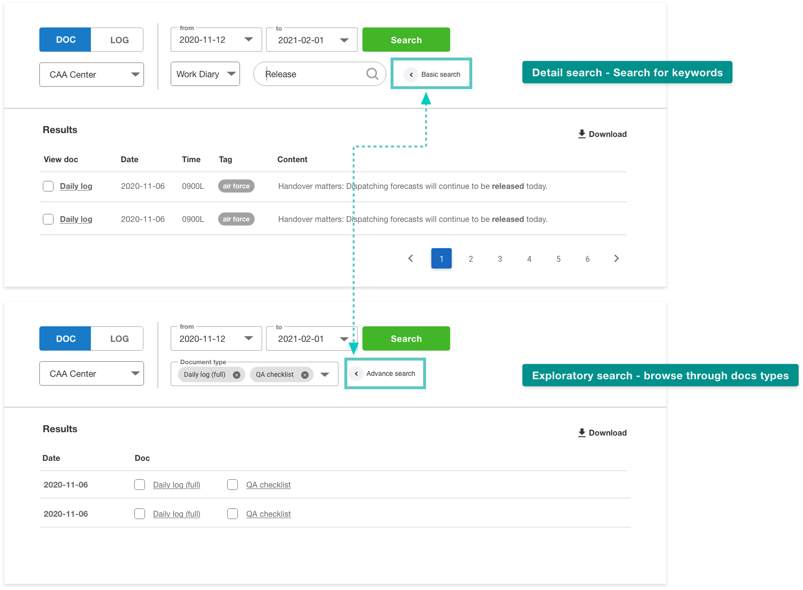

The Shift to Digital: Moving Away from Paper-Based Operations
The Civil Aeronautics Administration is undergoing a major digital transformation in which it plans to move many paper-based operations to an online system. The internal and external networks of the Civil Aeronautics Administration cannot currently communicate with each other, which means that forecasters must use flash drives to transfer data and present it at weather forecast meetings. In addition, the approval process for certain actions requires the use of multiple stamps and paper copies. We conducted a total of 7 on-site user interviews and 4 online sessions, with approximately 25 participants, including 80 forecasters from the Meteorological Center and various external weather stations, as well as the directors of each station.

Goal: Navigating the Complexities of User Submissions
The goal of my project is to design an online operating system for various roles and to convert all paper-based operations to online format. This is the first time I have designed such a large system from scratch, so the main challenge I faced was understanding the complex process of user submissions.
A Scalability Challenge: Adapting to Evolving Requirements
In the initial phase of research, I visited the Civil Aviation center, gathered all relevant documents, and conducted two interviews. I organized the collected information and created a preliminary page layout.
However, my progress was disrupted by frequent changes to the project. The user requirements increased significantly, adding ten external stations, increasing the number of relevant individuals from 30 to 100, and expanding the number of roles from four to eight. This resulted in the need for significant adjustments to the information architecture. Despite these challenges, I remained committed to ensuring the success of the project.
Designing for User Behavior: Iterating the Page Layout
Based on my interviews with users, I identified the most common behaviors as: viewing dates and to-do items, entering the content area to edit, clicking the action bar to send after editing, and switching between to-do items. Based on these findings, I prioritized the most important navigation and action columns.
I divided the user behavior into "internal actions" and "external actions". Internal actions involve “changing documents”, such as editing, commenting, and sending, while external actions involve “further actions”, such as reviewing, viewing, downloading, and uploading the data to other websites.
I also separated the date navigation and file navigation in the sidebar to allow users to easily switch between file items for a specific date. This helps to streamline the user experience and make it more efficient.
Optimizing Navigation for Frequent Actions and Decision-Making
Unlike external products, users of internal systems often repeat similar tasks on a daily basis. A well-designed navigation system that is easy to switch and browse can significantly improve overall work efficiency. A typical operating system user follows the following decision-making process:
- Check for important to-do items
- Determine the task at hand
- Decide on the main task to be completed
- Access the relevant file
- Edit the file
- Review past files
Designing a user-friendly navigation system that facilitates this process is essential for optimizing user experience and productivity.
Streamlining the Submission and Approval Process for 8 Authorities
I need to consider 8 roles in CAA, each with its own tasks and access to specific file. In the interviews, I clarified the workflow for each of them and created a flow chart to map it out. This flow chart was constantly reviewed and discussed between forecasters and engineers as a key point of confirmation throughout the iterative product design process.
Ensuring that the workflow is clear and well-defined is essential for the successful implementation and use of the system.
Iterating the Search System: Keyword Search Leading the Way
Searches are a common activity within the system. Users typically perform searches in one of three ways: a) when writing a quarterly report, they need to consult documents from various units for a certain period of time; b) they need to consult documents related to specific past events; or c) they need to consult all documents from a certain period of time in the event of a major occurrence.
Among these search modes, I found that keyword searches accounted for over 50% of searches, while exploratory searches accounted for about 25%. There were very few re-searches and blanket searches. Understanding the most common search behaviors can inform the design and optimization of the search system to improve the user experience.
Designing Search Interfaces Based on User Behavior Analysis
Based on my analysis of search behavior, I designed the initial search and advanced search interfaces. For the initial search, I prioritized the most common search type, "keyword search", and provided clear options for "keywords", "document types", "date ranges", and "units". For the advanced search, I included the option for "All Documents Search" to meet the remaining search needs. These design decisions were made to ensure that the search functionality is intuitive and meets the diverse needs of users.
Reflection: The Importance of Thorough User Research
Incomplete user research at the outset proved to be a major mistake, as effective communication is critical to the success of the project. I began designing the interface before fully understanding the overall user flow and permissions, which resulted in significant adjustments to the overall interface structure later on. If given the opportunity to start again, I would take a holistic view of the project, consider the scalability of the system from the ground up, and conduct more requirements interviews at the earliest stage to ensure a thorough understanding of the permissions process and details.